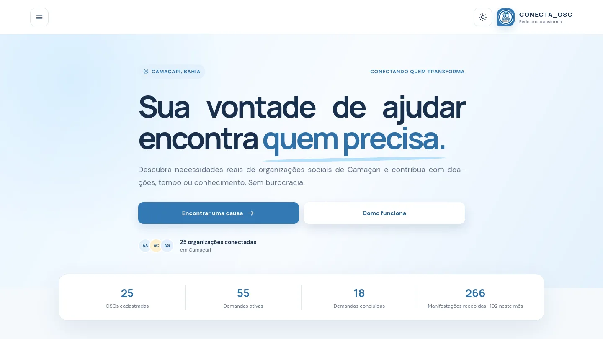
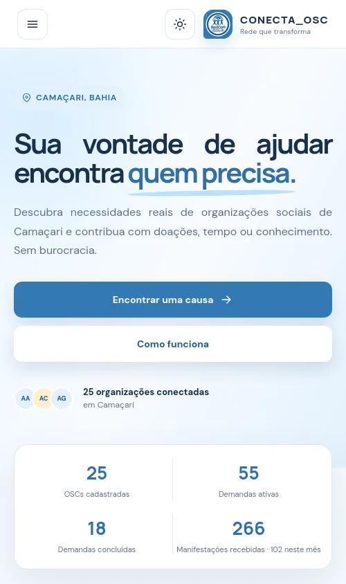
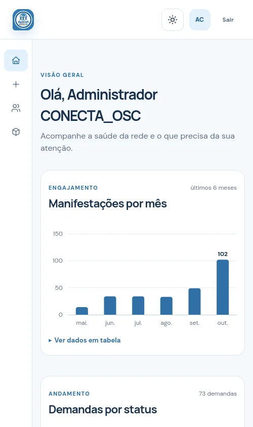

Apoiador
- Feed com as demandas ativas, urgentes primeiro
- Filtros por categoria, status e urgência, e busca por título ou organização
- Botão "Quero ajudar" com formulário simples
- Tema claro e escuro
Plataforma web que reúne as necessidades das organizações da sociedade civil de Camaçari em um só lugar. As OSCs publicam o que precisam, e qualquer pessoa pode se oferecer para ajudar sem criar conta.

O desafio veio da REDCAM, uma rede real de organizações de Camaçari. O grupo transformou esse cenário em uma plataforma pensada para uma OSC de verdade usar no dia seguinte.
As necessidades das OSCs circulam por mensagens, redes sociais e indicações pessoais. Boa parte nunca chega a quem poderia atender.
Quem quer ajudar não sabe quais organizações precisam de quê, nem se o pedido é legítimo. O apoio se perde dos dois lados.
Um lugar único e confiável. Cada demanda é publicada pela própria organização, com categoria, quantidade, prazo e status.
O apoiador filtra, escolhe e manifesta interesse em poucos cliques. O contato dele vai somente para a OSC responsável.
A equipe da rede registra a organização e gera a senha inicial de acesso.
Categoria, quantidade, prazo e descrição do que a organização precisa.
Demandas urgentes aparecem primeiro, com filtros por categoria, status e busca.
Nome, contato, tipo de apoio e mensagem. Não exige cadastro.
Vê os contatos no painel e atualiza o status até concluir. Concluída, sai do feed público.
Privacidade por padrão (LGPD). Telefone e e-mail do apoiador aparecem apenas no painel da OSC responsável, nunca no feed nem na API pública.
Clique em uma imagem para ampliar.


As telas usam dados fictícios de demonstração.
O wireframe já separava o feed, o detalhe da demanda e a área da OSC. A versão final manteve essa estrutura e ganhou painéis, gráficos e acessibilidade.
O apoiador encontra uma demanda, manifesta interesse, a OSC recebe o contato e o administrador acompanha a rede.
Prefere testar? Abra o projeto funcionando. O feed e o formulário de interesse são públicos; as áreas da OSC e do administrador exigem login.
O mesmo token JWT autentica o site (em cookie) e a API (no cabeçalho Bearer). Isso deixa a base pronta para um aplicativo mobile.
| Camada | Tecnologias | Por quê |
|---|---|---|
| Back-end | PHP 8.2+ (8.4 em produção), Laravel 12, Eloquent | Orientação a objetos, validação, autorização e consultas parametrizadas. |
| Front-end | React 19, TypeScript, Inertia.js 3, React Compiler | Telas sem recarregar a página, com rotas e props tipadas. |
| Estilo | Tailwind CSS 4 e design system próprio | Mobile first, com tema claro e escuro por tokens. |
| Banco | MySQL 8, TiDB Cloud em produção | Modelo físico em script SQL, espelhado pelas migrations. Em produção, um banco compatível com MySQL no plano gratuito. |
| Autenticação | JWT HS256 | O mesmo token vale no site e na API. |
| Deploy | Docker, FrankenPHP, Vercel | Uma imagem com PHP 8.4 e o front já compilado. O Vercel cuida do HTTPS e das instâncias. |
| Qualidade | PHPUnit, Vitest, Testing Library, axe-core, ESLint, Pint | Regressões e acessibilidade conferidas a cada mudança. |
Contato do apoiador visível apenas à OSC responsável. Ele nunca aparece no feed nem na API pública.
Token em cookie HttpOnly e SameSite=Lax. Sair invalida o token, e trocar a senha derruba todos os logins da conta.
Armazenadas com bcrypt, mínimo de 8 caracteres com letras e números e bloqueio após 5 tentativas.
Limite por IP, campo armadilha, tempo mínimo de envio e Cloudflare Turnstile opcional contra robôs.
Cadastro e login de OSCs e admin, CRUD de demandas, feed com filtros, interesse sem login, status e painel do administrador.
Painel da OSC com gráficos. Próximos passos: login de apoiadores com histórico, notificações por e-mail, filtros por bairro e upload de foto.
Aplicativo mobile, integração com empresas (ESG), mapa interativo e doação financeira. A base já está pronta na API REST.
O CONECTA_OSC é o trabalho de conclusão do Grupo A no Programa de Inovação e Tecnologia do CAEC, em parceria com o projeto de extensão DAX Code.